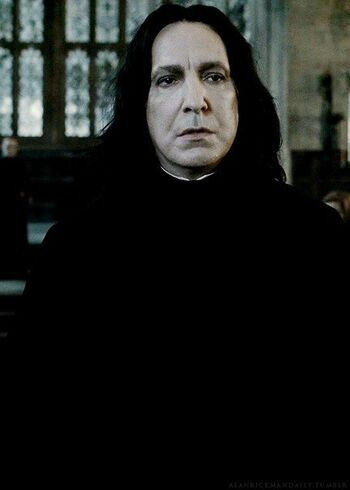

|
|
| Severus Snape El Profesor Severus Snape (n. 9 de enero de 1960 - m. 2 de mayo de 1998) fue Maestro de Pociones (1981-1996), profesor de Defensa Contra las Artes Oscuras (1996-1997) y director (1997-1998) de Hogwarts, a la que asistió como estudiante desde 1971 hasta 1978. Snape desempeñó un papel esencial en las dos guerras contra Lord Voldemort. Severus Snape era un mago de sangre mestiza, hijo de la bruja Eileen Prince, y del muggle Tobías Snape. Fue criado en una vivienda muggle de la calle de la Hilandera que estaba muy cerca de la casa de la familia Evans. Conoció a Lily y Petunia Evans cuando tenía nueve años, y se enamoró de Lily, convirtiéndose en el mejor amigo de ella. En 1971 comenzó su primer año en Hogwarts, donde fue seleccionado para Slytherin. Severus se convirtió en el enemigo inmediato de James Potter y Sirius Black y fue una víctima frecuente de sus bromas. Snape fue desarrollando una pasión a las Artes Oscuras a una edad temprana, y prefirió la supremacía de la sangre pura en la Casa Slytherin, a pesar de su amor por Lily Evans, que era nacida de muggles. Esto puso en riesgo su amistad con Lily.En algún momento de la etapa escolar se peleó con Lily y terminaron con su amistad.Después de salir de la escuela se unió a los mortífagos, junto con varios de sus compañeros de Slytherin. Durante su etapa de mortífago fue él quien escuchó a hurtadillas la profecía que hablaba sobre Lord Voldemort y un niño nacido a finales de julio, hijo de los que habían desafiado al señor tenebroso en tres ocasiones y habían salido con vida. Solo pudo escuchar la mitad de la profecía ya que fue descubierto y lo echaron del lugar así que no pudo advertir a su amo de los peligroso que podría ser atacar a ese niño. Se arrepintió de haber hecho esto cuando se enteró de que Voldemort había empezado a perseguir a los Potter, y le pidió que cuando los atacara no matara a Lily. También le pidió a Dumbledore que los protegiera a todos, y se convirtió en su espía. Cuando Voldemort pierde su cuerpo y todos sus poderes en su fallido intento de matar a Harry Potter, Snape, sufriendo por la muerte de su amada, ayuda a Dumbledore a cuidar de Harry. Con enorme dificultad, Snape fue capaz de evitar que Lord Voldemort averiguara la verdad acerca de su lealtad. A pesar de las opiniones de la mayoría de los demás, Albus Dumbledore siempre confió en Snape por razones que se mantuvieron entre los dos hasta sus muertes. Después de su muerte, se revela que su profundo amor por Lily Evans lo llevó a arrepentirse, uniéndose a la causa de Dumbledore. La relación entre Dumbledore y Snape sería una en la que se forma una fuerte lealtad, hasta el punto de que Snape mata a Dumbledore porque éste último se lo pide. Antes de la muerte de Dumbledore, Snape se comprometió a proteger a los estudiantes de Hogwarts de los mortífagos, que inevitablemente iban a tomar el control del Ministerio de la Magia, así como del colegio. Snape más tarde participó en la Batalla de Hogwarts, pero fue asesinado por Nagini, la serpiente Horrocrux de Lord Voldemort quien se lo ordenó porque equivocadamente creía que Snape era el amo de la Varita de Saúco, una varita poderosa que Voldemort quería. Después de su muerte, Harry Potter se aseguró de que el retrato de Severus Snape se colocara en el despacho del director de Hogwarts, en honor a su heroísmo, a pesar de sus importantes diferencias personales. |
| Hecho por Antonio Jesús Luque Parlón (Todos los derechos reservados por COPYRIGHT) |